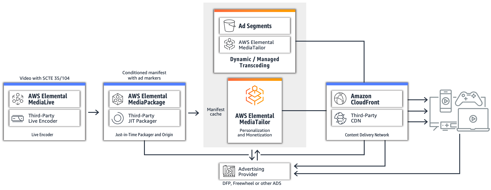
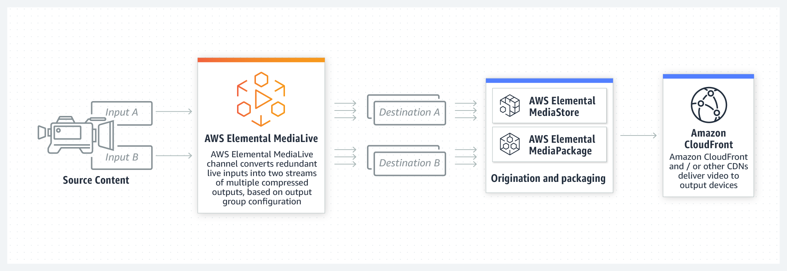
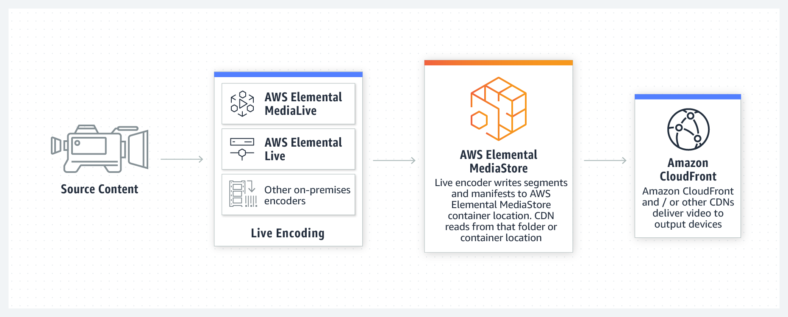
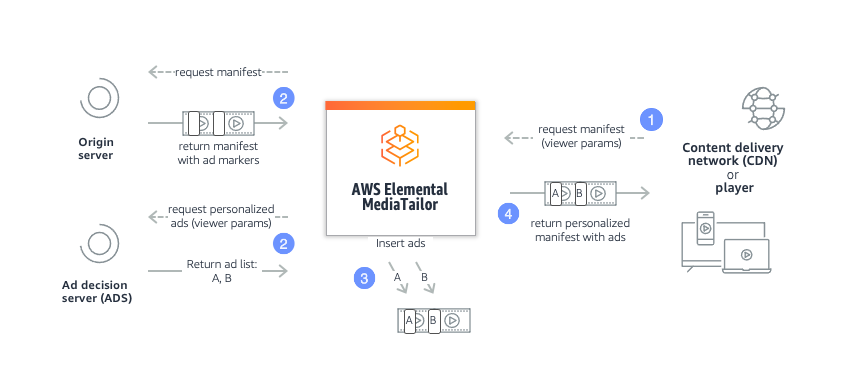
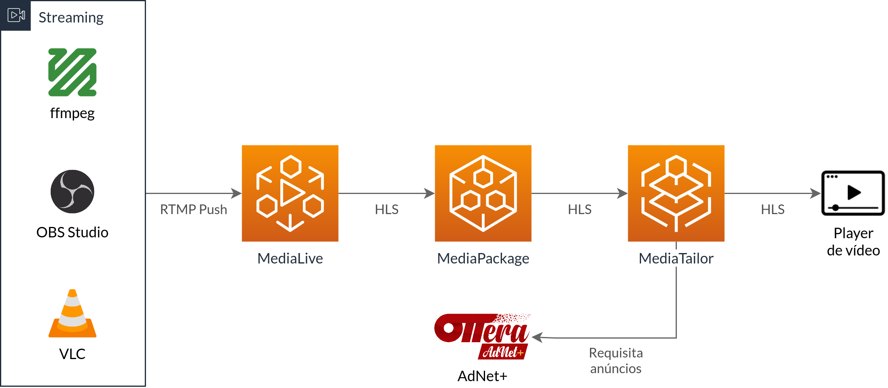
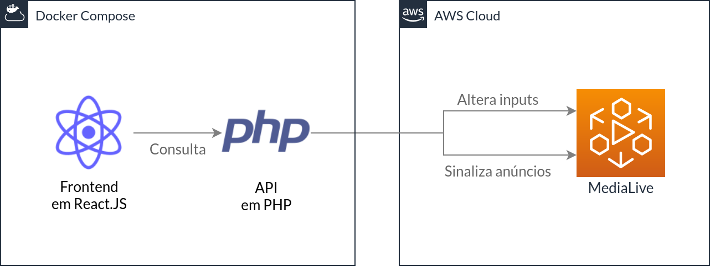

Workshop AWS MediaLive
OTTera
Serviços OTT (over-the-top) para distribuição e monetização de conteúdos em diversas plataformas
Global:
200+
canais lineares75+
aplicativos OTT105.000.000+
usuários finaisLATAM:
1.500.000.000+
de impressões por mês40+
canais lineares#1
em serviços de OTTOTTera Equipe presente
Adam Zhu
adam@ottera.tv
Craig McEldowney
craig@ottera.tvJoe Chellman
joe@ottera.tvSteve Rifkin
srifkin@ottera.tvVinícius Campitelli
vinicius@ottera.tvObjetivo
Utilizar os serviços de streaming da AWS para criar e gerenciar um canal ao vivo - e eventualmente disponibilizá-lo em diversos dispositivos, como TVs, computadores, smartphones...
Soluções AWS
Em 2015, a Amazon compra uma empresa chamada Elemental Technologies por cerca de US$500 milhões para oferecer soluções de vídeo
Soluções AWS
Os serviços são:
MediaConnect
MediaConvert
MediaLive *
MediaPackage
MediaStore *
MediaTailor *
Soluções AWS
Exemplo de arquitetura:
MediaLive
MediaLive Glossário
MediaLive Terminology (docs.aws.amazon.com)MediaLive Fluxograma
MediaLive Entradas
Formatos aceitos para os vídeos de entrada:
Streaming:
- RTP
- RTMP Pull / RTMP Push *
- HLS
Estáticos:
- Arquivos MP4
- Arquivos TS
Serviços:
- AWS MediaConnect
- AWS Cloud Digital Interface
- AWS Elemental Link
MediaLive Saídas
Formatos aceitos para as saídas:
- Arquivos TS para S3 ou via UDP
- Arquivos JPEG com frames para S3
- AWS MediaPackage
- AWS MediaStore *
- HLS
- Microsoft Smooth
- RTMP
MediaLive Documentações
MediaStore
MediaStore Glossário
Concepts and terminology (docs.aws.amazon.com)MediaStore Fluxograma
CloudFront
CloudFront Como funciona?

What is Amazon CloudFront? (docs.aws.amazon.com)
CloudFront Configurando
Delivering live streaming video with CloudFront and AWS Media ServicesMediaTailor
MediaTailor
A principal forma de monetização de um canal é através de anúncios comerciais (os famosos ads)
Quem opera o canal sinaliza a entrada de um intervalo comercial (imediatamente ou agendando), igual uma TV
Algumas plataformas de streaming podem forçar a inserção de anúncios de acordo com suas políticas
MediaTailor Glossário
- SSAI (Server-Side Ad Insertion): serviço (como o MediaTailor) que insere anúncios em um vídeo
- Ad Decision Server: servidor que retorna anúncios de acordo com parâmetros financeiros e de personalização do espectador
MediaTailor Fluxo
Ao receber a sinalização de um anúncio, o serviço irá pedir a um servidor especializado em anúncios (chamado Ad Decision Server) quais devem ser inseridos de acordo com dados de quem está assistindo para personalização
Então, esse serviço altera o sinal de streaming inserindo os vídeos dos anúncios (um processo chamado stitching)
MediaTailor Fluxograma
Hands-on
Vamos criar uma aplicação que será o painel de controle do nosso canal com as seguintes funcionalidades:
- Chaveamento entre entradas;
- Sinalização de Anúncios;
- Overlays (estático com imagem e dinâmico com vídeo).
Hands-on Inicializando Aplicação
-
Clone o repositório
git clone github.com/ottera-inc/workshop-medialive.git -
Edite o arquivo
backend/.enve informe a Access Key e a Secret Key que foram disponibilizadas -
Execute
docker-compose up -da partir da pasta raiz (onde clonou o repositório) - Acesse localhost:3000
Hands-on Arquitetura
Hands-on Aplicação
Hands-on 1. Instalar Ferramenta de Streaming
Comece instalando uma ferramenta que irá fazer o streaming de sua tela:
- OBS Studio (nossa escolha)
- VLC
- ffmpeg
- butt (broadcast using this tool)
Hands-on 2. Configurar AWS
Para não gastarmos tempo em nosso workshop, já configuramos todos os serviços (MediaLive, MediaPackage e MediaTailor)
Hands-on 3. Configurar Streaming
- Conecte a ferramenta à AWS, seguindo os tutoriais para:
- Configure-a para capturar sua tela atual
Hands-on 4. Criar Aplicação
-
Utilize as aplicações de modelo que estão nesse repositório na pasta
app - Ou crie uma aplicação do zero utilizando sua linguagem favorita e instale o SDK da AWS
Hands-on 4. Criar Aplicação
- Acesse a documentação para a linguagem escolhida:
Hands-on 5. Iniciar Transmissão
- Inicie o canal na MediaLive (faremos isso para você)
- Comece a transmissão a partir da ferramenta de streaming escolhida
- Acompanhe através do link informado
Hands-on 6. Chavear Entradas
Imagine que em um sistema real você pode ter várias entradas de sinal e irá precisar chavear ("cortar") entre elas
O canal que criamos possui diversas entradas já configuradas e preparadas para serem escolhidas
Hands-on 6. Chavear Entradas
Vamos então criar a funcionalidade que irá trocar a entrada do sinal
-
Descubra os nomes das entradas disponíveis através do recurso
DescribeChannel -
Use o recurso de
BatchUpdateSchedulecom a açãoInputSwitche agendamento imediato para alterar a entrada de sinal
Hands-on 7. Sinalização de Anúncios
O protocolo SCTE-35 é um dos mais utilizados para sinalização de anúncios
Vamos usar novamente o recurso de BatchUpdateSchedule com a ação
Scte35SpliceInsertSettings e agendamento imediato
Hands-on 8. Overlays
Obrigado!
Siga-nos em nossas redes sociais: